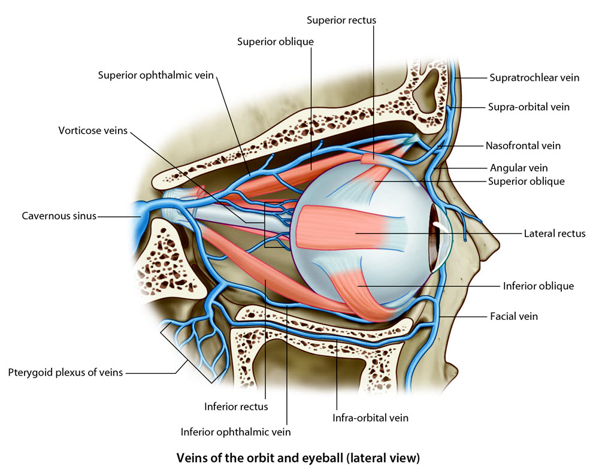

Neurology Lab 6 - Module 3 - Orbit - Blood and Nerve Supply: Page 3 of 5
×

Venous suppy
The venous drainage of the orbit and eyeball are difiicult to see on our cadaver.
The following image will help to understand the venous drainage of the orbit and eye.
Where does the venous drainage from the orbit and the eyeball proceed? |
|
|
In general, the superior portion of the eye drains into the cavernous sinus. The inferior portion drains into the pterygoid plexus. |
|
Why is this important? |
|
|
Drainage from the orbit may serve as a route for infection inside the cranial cavity (Cavernous sinus). |
|